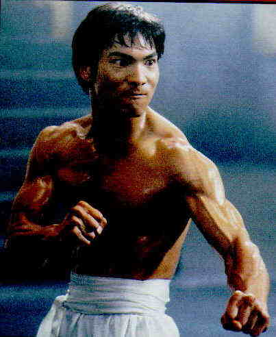
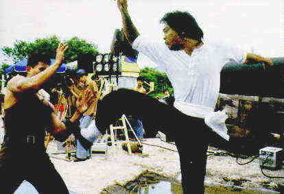

Dragon: Special Edition B+, A US/1993/Color/Widescreen 2.25:1/Stereo Surround/120 minutes/Directed by Rob Cohen/Starring Jason Scott Lee, Lauren Holly/MCA-Universal/48 Chaps/Audio Commentary, Supplementals/2 discs/CLV-CAV/$69.98 MCA initiates its "Signature Collection" of laser discs with a worthy undertaking, a special edition of the Rob Cohen directed film on the life of Bruce Lee, Dragon. In the March 1994 issue of LaserViews I wrote the following in a review of this film: "Dragon effortlessly mixes elements from kung-fu, romance and biopic genres into a thoroughly satisfying cocktail of explosive pleasure. Quickly covering Lee’s formative years, the main focus is on Lee’s development as a martial arts figure and his subsequent career as a budding cinema icon. The key to the success of Dragon is the casting of Jason Scott Lee. He has the physical charisma to capture the essence of the master of martial arts, Bruce Lee, and the ebullient charm to carry the film upon his sculpted torso." Watching Dragon  again in no way diminished the pleasure of the initial experience. The film is beautifully made and this special edition provides a glimpse into the filmmaker’s mind as well as the arduous task of recreating the life of such a familiar figure. Rob Cohen’s enthusiastic audio commentary that is presented on the right analog audio channel broadens the understanding of Bruce Lee. He delivers his commentary in a pleasing conversational style that is satisfying scene specific. You find out details of Lee’s life that were left out, such as the fact that his father was an opium smoker, and Cohen’s intelligent reasons for such subjective selection. Cohen’s sincerity and expertise are reflected in the very fine realization of his film.This Signature Collection  edition opens with a dynamic theatrical trailer for Dragon and is followed a sincere and moving introduction to the laser disc production by Linda Lee Caldwell, who is played winningly by Lauren Holly in the film. Side four of the disc set is devoted to supplemental materials. There are story boards presented for five different sequences. Jason Scott Lee’s screen test is featured with an additional audio commentary by Rob Cohen. The test is very exciting and from watching it there can be no doubt that this is the man who was meant to play Lee. According to Cohen seven weeks of intensive training and preparation were put in by Lee before filming the screen test and it paid off with an immediate go from the brass at the studio. There’s more yet: a making of featurette is included that is edited in a very entertaining fashion and includes on screen commentary from the film’s principals. Next are outtakes from the making of featurette , which are somewhat disappointing and only succeeded in whetting my appetite for scenes that were cut from the feature film. Production photographs, promotional materials and a selection of photographs of Lee are standard special edition treats, but the Bruce Lee television interview that concludes this disc presentation is the perfect finish to a most delightful production. A disconcerting promo for what appear to be an MCA television show, Vanishing Son, is precipitously tacked on at the end of the disc and prior to the disc production credits.Everything about this production is a pleasure. It’s packed full of excellent materials. The transfer appears to be the same one used for the initial widescreen edition of Dragon, and the pressing is close to perfection. The surround sound is extensively used and cleanly recorded. You couldn’t ask for much more. Let’s hope that MCA continues in the tradition of this premiere offering in their "Signature Collection." |